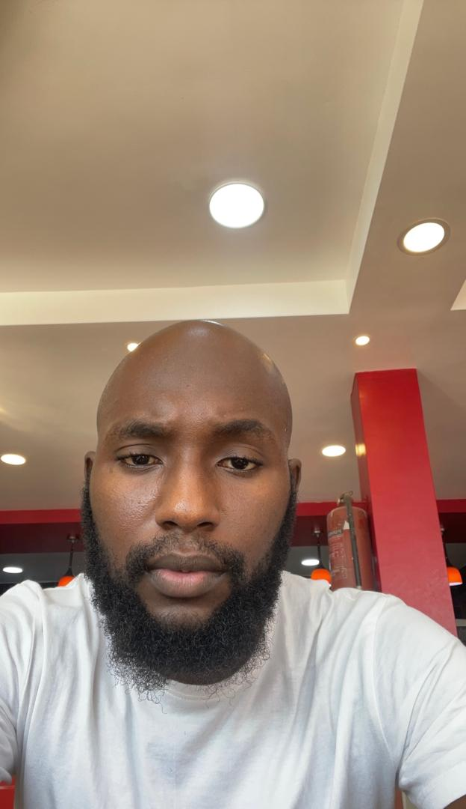

Resume
Contact Information
Lagos, Nigeria
Gmail: Bolajiolanrewaju450@gmail.com
Professional Summary
A Strategic Brand Manager & Organizational Analyst with a proven track record in building impactful brand identities and optimizing business operations.

Education
- B.Tech in Agronomy – LAUTECH
- Brand Management – University of London (Coursera)
- Organizational Analysis – Stanford University (Coursera)
- Cybersecurity for Everyone – University of Maryland (Coursera)
Certificates
- HTML Certified – SoloLearn
- Python Fundamentals – Cisco Networking Academy
- Responsive Web Design – freeCodeCamp
Work Experience
-
Freelance Video Editor / Web Developer
2019 – 2020
Worked with clients across Lagos to deliver high-quality video edits for events and product launches Designed and deployed websites for small businesses and creatives, focusing on clean design and mobile responsiveness. -
Brand Manager – Ewu Couture
2022 – 2023
Developed seasonal brand guidelines for the fashion line. Strengthened audience trust and brand identity across digital and physical spaces. -
Brand Manager – Ewu Couture
2024 – present
Created holiday-themed Instagram campaigns that increased repeat sales. Designed packaging and managed content strategy.
Technical Skills
- Brand Management: Brand Strategy, Customer Journey Mapping, Market Research, Campaign Planning
- Organizational Analysis: Workflow Mapping, Business Process Improvement, Change Management, SWOT Analysis
- Business Tools: Google Analytics, Notion, Microsoft Excel
- Design: Canva, Photoshop (basic)
- Web: HTML, CSS, JavaScript
- Editing: Adobe Premiere Pro, DaVinci Resolve
- Tools: GitHub, VS Code, Notepad++
Projects
- Brand Strategy: – Developed a comprehensive brand strategy for 'Ewu Couture', including audience segmentation, positioning, visual identity alignment, and cross-channel storytelling. Defined brand pillars and strategic goals to enhance engagement and brand loyalty.
- Organizational Analysis –Conducted an in-depth organizational analysis for 'Xpress Giftings' using tools like SWOT and structure mapping. Identified key operational gaps, proposed workflow optimizations, and recommended alignment between brand operations and business goals.
- Personal Portfolio Website – Designed and coded a personal website showcasing resume.